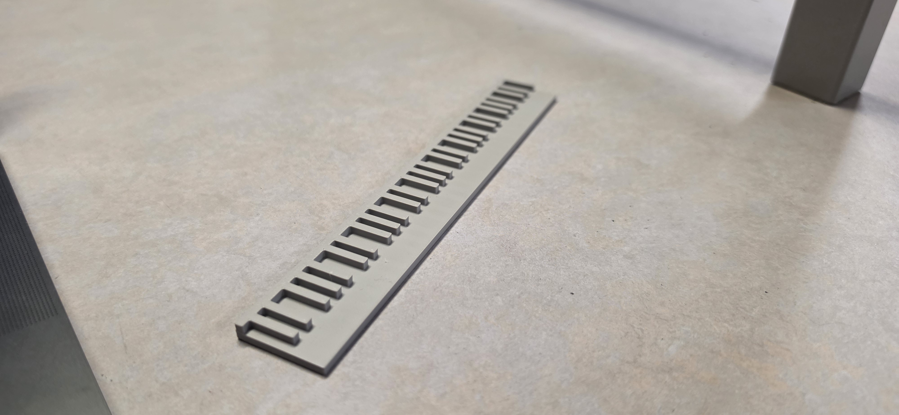
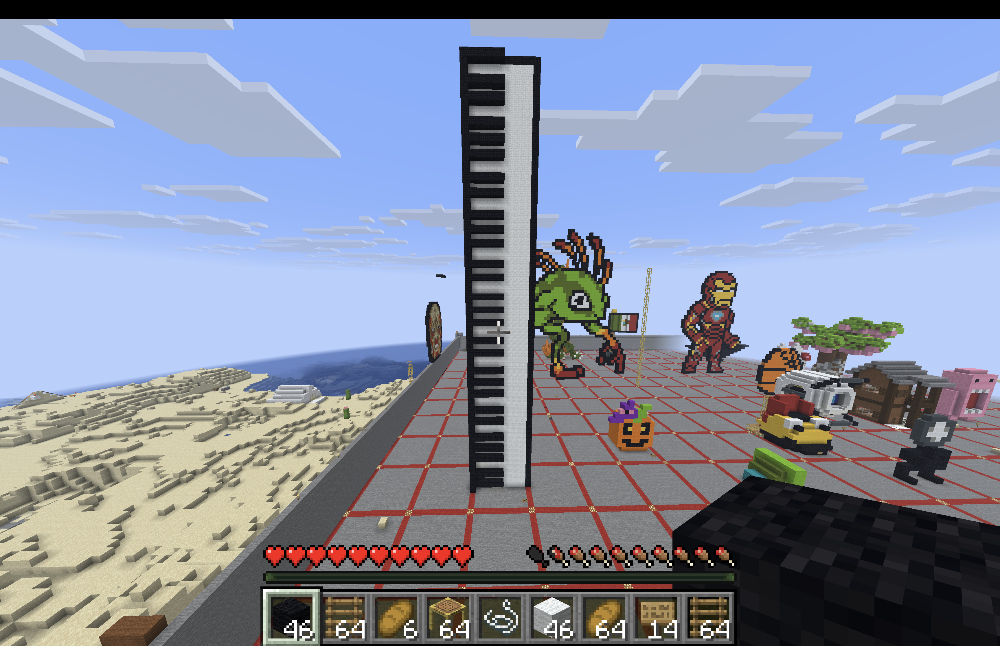

3D Art
A creative experience while playing a game that makes your work come to life.
3D Sculpture / Model

Artist Statement & Process
I wanted to make someting familiar to me which is mini piano since I am a music technology major.
Minecraft Piano Model

Artist Statement & Process
Creating this piano was a proccess of making sure that I didn't mess up the pattern, considering it was hard to tell when i was making it via minecraft perspective.